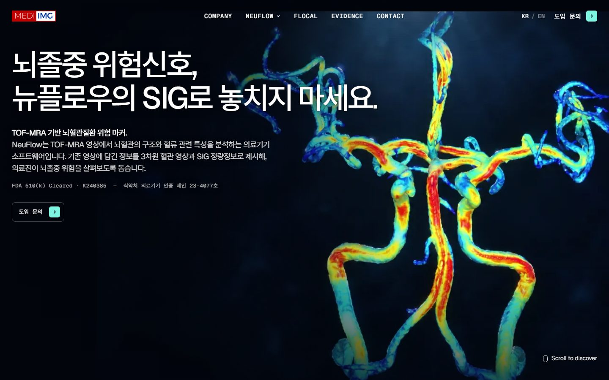
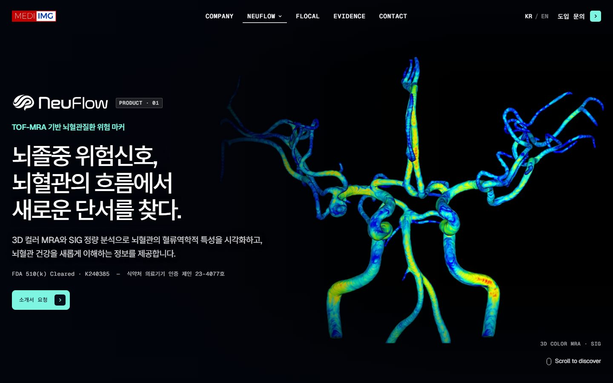
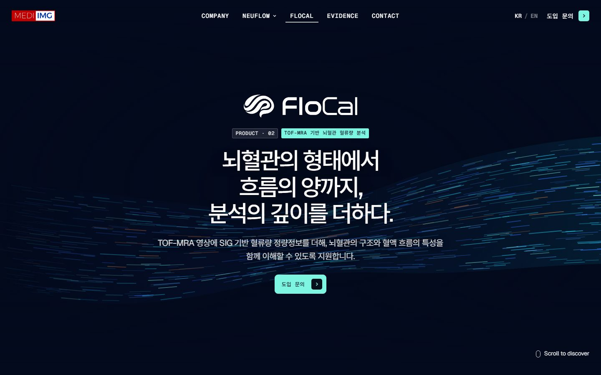

HOMEPAGE RENEWAL · 시안 5
메디이미지 홈페이지
리뉴얼 시안
지금까지 만든 시안 페이지를 한곳에 모았습니다. 카드를 누르면 해당 페이지가 열리고, 각 페이지 상단 메뉴로 서로 오갈 수 있습니다.

01 · MAIN
메인 페이지
회사 소개, NeuFlow 핵심 내용, 근거 · 도입 병원, 도입 문의까지 담은 메인 페이지입니다.
페이지 열기 →
02 · PRODUCT
NeuFlow 상세페이지
제품 소개, 기존 MRA와의 차이, 인증, 주요 기능, 구동 단계, 활용 분야, 사용자별 혜택, FAQ로 구성했습니다.
페이지 열기 →
03 · PRODUCT
FloCal 상세페이지
측정 대상, 기존 방법과의 차이, 주요 기능, 사용 과정, 활용 안내, 인증, FAQ로 구성했습니다.
페이지 열기 →